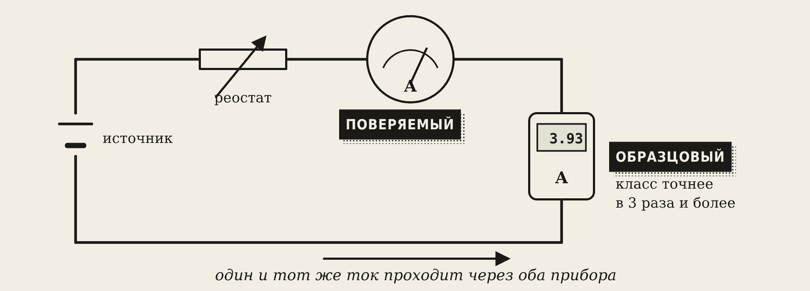
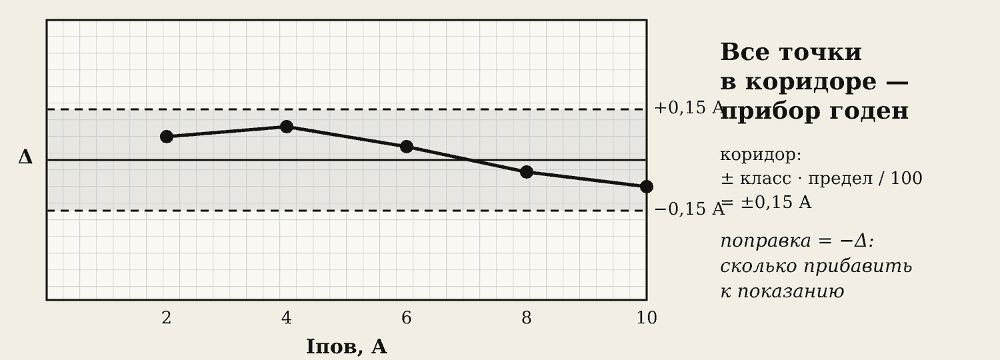

1. Что такое поверка
Прибор со временем «стареет»: пружинка ослабевает, контакты окисляются, и стрелка начинает врать. Поверка — проверка, укладывается ли ошибка прибора в его класс точности.
Идея простая: через два амперметра пускают один и тот же ток. Один — поверяемый (тот, который проверяем). Другой — образцовый: он намного точнее, его показание считаем настоящим. Разница показаний — ошибка поверяемого прибора.
Запомните
Образцовый прибор должен быть точнее поверяемого хотя бы в 3 раза. Например, поверяемый — класса 1,5, образцовый — класса 0,5 или цифровой.
2. Схема

Оба амперметра и реостат включены последовательно — значит, ток через них одинаковый. Реостатом меняем ток.
Работу делают двумя способами:
- Б — вживую на стенде с настоящими приборами (под присмотром преподавателя);
- В — в браузере, лаборатория «Измерения», вкладка «Поверка». Вариант — номер в журнале.
3. Порядок работы
- Выпишите паспорт поверяемого прибора: предел, класс точности, род тока, число делений.
- Посчитайте допустимую ошибку: Δдоп = класс · Iпред / 100. Для амперметра 10 А класса 1,5: Δдоп = ±0,15 А.
- Соберите схему. Реостат — на минимум тока.
- Включите. Реостатом ставьте стрелку поверяемого прибора точно на оцифрованную отметку: 2, 4, 6, 8, 10 А.
- На каждой отметке запишите показание образцового прибора.
- Вживую: пройдите отметки вверх и обратно сверху вниз — так видно трение в механизме. В браузере — только вверх.
- Выключите.
Осторожно
Вживую: собирать и менять схему только при выключенном питании. Ток не больше предела приборов.
4. Расчёт и решение
Для каждой отметки:
Δ = Iпов − Iобр γ = Δ / Iпред · 100 %
Прибор годен, если на всех отметках |γ| не больше класса точности.
Образец. Амперметр 10 А, класс 1,5.
| Iпов, А | Iобр, А | Δ, А | γ, % | ≤ 1,5 %? |
|---|---|---|---|---|
| 2 | 2,00 | 0,00 | 0,0 | да |
| 4 | 3,99 | +0,01 | +0,1 | да |
| 6 | 5,97 | +0,03 | +0,3 | да |
| 8 | 7,95 | +0,05 | +0,5 | да |
| 10 | 9,93 | +0,07 | +0,7 | да |
Наибольшая приведённая погрешность 0,7 % — меньше 1,5 %. Прибор годен. Он немного завышает показания: на отметке 10 А нужно вычесть 0,07 А.
Поправка — сколько прибавить к показанию, чтобы получить настоящее значение: поправка = −Δ.
5. График погрешности

По горизонтали — отметки шкалы, по вертикали — Δ со знаком. Пунктиром рисуют коридор ±Δдоп. Все точки внутри коридора — прибор годен. Хотя бы одна снаружи — не годен.
6. Выводы — шаблон
- Наибольшая приведённая погрешность γ = … % на отметке … А.
- Класс прибора … %, допустимая ошибка ±… А. Прибор годен / не годен, потому что …
- Прибор завышает / занижает показания; поправка на отметке … А равна … А.
7. Защита: о чём спросят
- Зачем образцовый прибор точнее поверяемого?
- Почему оба прибора включают последовательно?
- Чем приведённая погрешность отличается от относительной?
- Почему ставят стрелку поверяемого прибора на отметку, а не образцового?
Словарик
- Поверка — проверка, укладывается ли ошибка прибора в его класс точности.
- Поверяемый прибор — тот, который проверяем.
- Образцовый прибор — точный прибор, по нему считаем «настоящее» значение.
- Реостат — переменный резистор для плавной регулировки тока.
- Допустимая ошибка Δдоп — класс · предел / 100.
- Поправка — число, которое прибавляют к показанию; равна −Δ.
- Вариация — разница показаний при движении стрелки вверх и вниз.
Эталоны в тетрадь
Перепишите в тетрадь по билетам — каждый эталон на отдельную страницу, с рисунком и строкой «Мой пример».
Виды измерений и приборов
Прямые и косвенные измерения. Классификация электроизмерительных приборов, обозначения на шкале.
- Прямое измерение — прибор сразу показывает нужную величину (вольтметр — напряжение). Косвенное — считаем по формуле (R = U / I по показаниям вольтметра и амперметра).
- По тому, что меряют: амперметр, вольтметр, омметр, ваттметр, счётчик энергии.
- По виду: стрелочные (аналоговые) и цифровые. По роду тока: постоянного (—), переменного (~).
- На шкале указаны: род тока (— или ~), класс точности (число, например 1,5), положение прибора (вертикально / горизонтально), звёздочка с цифрой — напряжение проверки изоляции.
- Примеры: счётчик в квартире, амперметр на панели сварочного аппарата.
Погрешности и класс точности
Погрешности измерений: абсолютная, относительная, приведённая. Класс точности.
- Абсолютная погрешность Δ = Xизм – Xдейств — на сколько ошибся прибор (в амперах, вольтах).
- Относительная δ = Δ / X · 100 % — ошибка в процентах от измеренного.
- Приведённая γ = Δ / Xпредел · 100 % — ошибка в процентах от предела шкалы.
- Класс точности — наибольшая допустимая приведённая погрешность. Пример: амперметр класса 1,5 на 10 А может ошибаться на ±0,15 А.
- Совет: мерьте во второй половине шкалы — там относительная ошибка меньше.
Как включать амперметр и вольтметр
Измерение тока и напряжения: схемы включения, шунт и добавочный резистор, токоизмерительные клещи.
- Амперметр — последовательно, в разрыв цепи: весь ток идёт через него. Его сопротивление очень маленькое. (Схема.)
- Вольтметр — параллельно, к двум точкам. Его сопротивление очень большое. (Схема.)
- Ошибка: амперметр, включённый параллельно, создаёт короткое замыкание и сгорает.
- Шунт — резистор параллельно амперметру, чтобы мерить большой ток. Добавочный резистор — последовательно с вольтметром, чтобы мерить большое напряжение.
- Токоизмерительные клещи меряют ток без разрыва цепи: ими обхватывают один провод. Так проверяют сварочный ток.
Проверь себя
Сначала ответьте сами — в тетради или вслух. Потом нажмите на вопрос, чтобы увидеть ответ.
1Амперметр на 5 А класса 2,5. Какая допустимая ошибка?
Δдоп = 2,5 · 5 / 100 = ±0,125 А.
2Почему амперметры при поверке соединяют последовательно?
Чтобы через оба шёл один и тот же ток — тогда разница показаний и есть ошибка.
3Поверяемый показывает 6 А, образцовый — 6,12 А. Предел 10 А. Найдите Δ и γ.
Δ = 6 − 6,12 = −0,12 А; γ = −0,12 / 10 · 100 = −1,2 %.
4Прибор класса 1,5, наибольшая |γ| = 2 %. Годен ли он?
Не годен: 2 % больше 1,5 %.
5Насколько точнее должен быть образцовый прибор?
Хотя бы в 3 раза.
6Прибор на всех отметках показывает больше образцового. Что это значит?
Он завышает показания; поправка отрицательная — из показаний надо вычитать.
Попробуйте в лаборатории
Откройте на телефоне или компьютере — ничего устанавливать не нужно.
Ответы к «Проверь себя»
- Δдоп = 2,5 · 5 / 100 = ±0,125 А.
- Чтобы через оба шёл один и тот же ток — тогда разница показаний и есть ошибка.
- Δ = 6 − 6,12 = −0,12 А; γ = −0,12 / 10 · 100 = −1,2 %.
- Не годен: 2 % больше 1,5 %.
- Хотя бы в 3 раза.
- Он завышает показания; поправка отрицательная — из показаний надо вычитать.